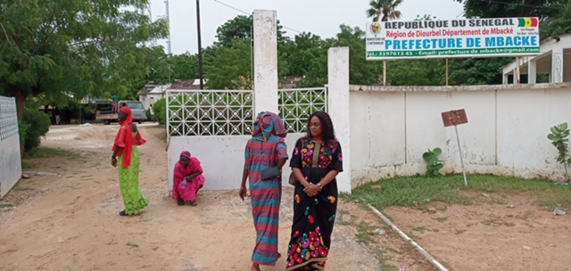
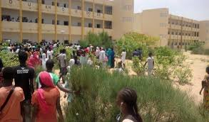
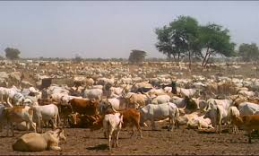
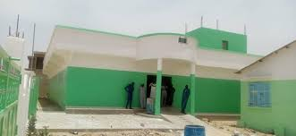

Baol times

Département de Mbacké Administration Pays Sénégal
Régions Diourbel Démographie Population710 342 hab.
Densité317 hab./km2 Géographie Superficie224 300 ha = 2 243 km2 Subdivisions
Arrondissements Kael - Ndame - Taïf
Le département de Mbacké est l'un des trois départements de la région de Diourbel (Sénégal),
au centre-ouest du pays.

Administration
Son chef-lieu est la ville de Mbacké, qui est aussi la seule commune du département.
Les trois arrondissements sont :
Arrondissement de Kael

L'arrondissement de Kael est l'un des arrondissements du Sénégal.
Il est situé au sud du département de Mbacké, dans la région de Diourbel.
Il compte huit communes
Arrondissement de Ndame
L'arrondissement de Ndame est l'un des arrondissements du Sénégal.
Il est situé au nord du département de Mbacké, dans la région de Diourbel.
Il compte cinq communes
Arrondissement de Taïf

La commune de Taïf est l'un des arrondissements du Sénégal.
Il est situé à l'est du département de Mbacké, dans la région de Diourbel.
Il compte deux communes